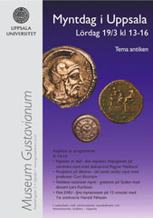
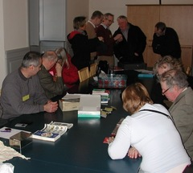
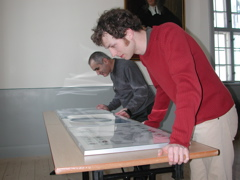
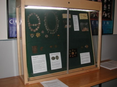
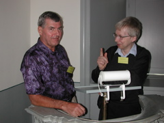
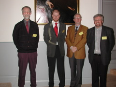

Program
Mötesreferat
Bli medlem
Historik
Stadgar
Samla mynt
Jubileumsbok
Jubileumsbok 2009
Jubileumsbok 2019
Småskrifter
Auktionskatalog
Länkar
Kontakt
Curt Ekström
Lördagen den 19 mars 2005 anordnades för fjärde året i rad "Myntdag i Uppsala" på Museum Gustavianum. Myntdagen arrangerades av Museum Gustavianum i samarbete med Uppsala universitets myntkabinett och Numismatiska klubben i Uppsala. Tillströmningen av besökare var större än under tidigare år - enligt uppgift från museet var det kring 200 personer.
En populär programpunkt var som vanligt expertbedömningen av besökarnas medhavda mynt, medaljer, polletter och sedlar. Vid denna myntens "antikrunda" var det många som kom med sina ärvda eller på annat sätt förvärvade föremål - från antika silvermynt till svenska plåtmynt och sentida kronmynt. Klubbens medlemmar hade fullt upp med bedömningarna och värderingarna.
Temat för årets myntdag var "antiken", vilket återspeglades i utställningarna och de givna föredragen. Flera av klubbens medlemmar har antiken som specialitet, och till myntdagen hade en utställning (powerpoint) med grekiska, romerska och bysantinska mynt sammanställts. Allmänt har intresset för antiken ökat väsentligt de senaste åren, främst genom ett antal populära böcker och filmer, nu senast om Alexander den store.
Harald Nilsson, föreståndare för Uppsala universitets myntkabinett, presenterade Museum Gustavianums förnämliga permanenta utställning av antika mynt.
I fyra korta föredrag bidrog sedan klubbmedlemmar med presentationer relaterade till antiken.
Ragnar Hedlund berättade i ett föredrag med titeln "Kejsaren är död - leve kejsaren. Propaganda på romerska mynt" på ett levande sätt om myntningen och historien under den första kejsartiden.
"Perspektiv på tillvaron - att samla antika mynt" (powerpoint) var titeln på föredraget av Curt Ekström. Här fick vi följa historien och myntningen under grekisk, romersk och bysantinsk tid, representerade av Alexander den store, kejsar Augustus och kejsar Justinianus. Människan är sig ganska lik genom årtusendena, även om vi sett en fantastisk teknisk utveckling de senaste hundra åren, och man kan lätt dra paralleller mellan antika och nutida händelser.
Lars Karlsson guidade oss genom Sicilien i föredraget "Världens vackraste mynt - grekerna på Sicilien". Vi fick njuta av högklassiga signerade mynt från Syrakusa, vackra grekiska tempelvyer och en spännade historiebeskrivning.
Att EMU inte är den första myntunionen fick vi lära oss i Harald Nilssons föredrag "Före EMU - fyra myntunioner på 15 minuter". Här slussades vi genom de stora myntunionerna under grekisk och romersk tid, samt den europeiska "daler"-unionen och den senaste nordiska myntunionen kring sekelskiftet 1800-1900. En gemensam valuta har stora fördelar vid handel med varor och tjänster och är sannerligen inget nytt påfund.
Utöver inslagen relaterade till antiken hade Kjell Holmberg och Magnus Wijk sammanställt en trevlig utställning med "kuriosa", i detta fall med bl.a. smycken gjorda av mynt och pappersmynt för undervisningsändamål.
Årets Myntdag i Uppsala var i alla stycken en succé - vi räknar med att komma tillbaks nästa vår.
Bilder:
Klicka på bilderna för större versioner.

{kind=link}
Annonsen.

{kind=link}
Expertbedömning och värdering av mynt.

{kind=link}
Werner Stensgård och Mohamed Soufi beundrar antikutställningen.

{kind=link}
Myntdagens kuriosautställning.

Anders Frösell och Per-Göran Carlsson.

{kind=link}
Anders Frösell och Kjell Holmberg debatterar.

{kind=link}
Föredragshållarna Curt Ekström, Ragnar Hedlund, Harald Nilsson och Lars Karlsson.